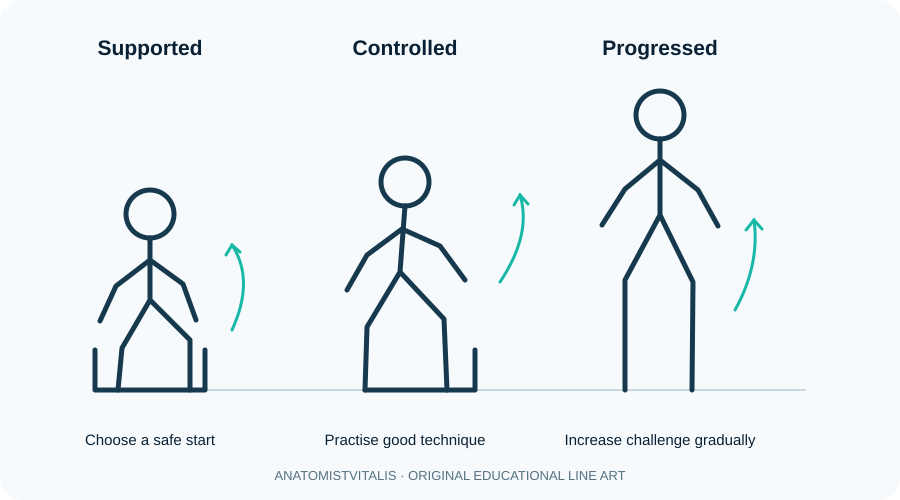

Therapeutic exercise and the FITT principle
A structured guide to exercise selection, dosage, progression and monitoring in rehabilitation.

What is therapeutic exercise?
Therapeutic exercise is planned physical activity selected to address an identified goal, such as improving strength, endurance, mobility, balance, coordination or functional performance. Exercise should be individualised to the person's condition, preferences, current capacity, environment and safety considerations.
The FITT framework
- Frequency: how often a session or exercise is performed.
- Intensity: how demanding the activity is, measured or described with an appropriate method.
- Time: duration of a session, exercise bout or hold.
- Type: the mode of activity, such as resistance, aerobic, balance, flexibility or task-specific training.
FITT is a planning framework, not a universal prescription. A programme also needs to consider total volume, rest, adherence, progression and the person's response.
Choosing and progressing exercise
Match the exercise to a functional goal. Strength training may use body weight, bands or resistance equipment; aerobic exercise may involve walking, cycling or other rhythmic activity; balance training challenges postural control; task-specific practice rehearses a meaningful activity. Begin at a level the person can perform safely and progress one or more variables gradually as tolerance improves.
Monitor symptoms, technique, fatigue, vital signs when indicated, recovery and delayed response. Modify the plan if symptoms are excessive, technique deteriorates or new warning signs appear. Contraindications and precautions depend on the clinical presentation and must be checked before exercise.
Adherence and self-management
Explain the purpose of each exercise, demonstrate and observe performance, agree on a realistic schedule, and provide clear written or visual instructions. Discuss barriers such as time, transport, pain, cost or confidence. A simple programme that is performed consistently may be more useful than a complicated plan that the person cannot sustain.
Clinical connection
For a person rebuilding strength after a period of inactivity, progression can begin with tolerable functional movements and advance as performance and recovery allow. There is no single safe dosage for every patient; individual assessment and relevant clinical guidance remain essential.
Further study
Use this lesson as a foundation and consult current professional guidance, validated assessment resources and relevant research for clinical decisions. Clinical practice must follow local professional standards and individual patient needs.
Check your understanding
- What is the principle of progressive overload?
Reveal answer
Exercise demand is increased gradually as capacity improves, while allowing adequate recovery and monitoring response.
- Why should exercise prescription account for intensity, frequency, duration and type?
Reveal answer
These variables shape the training stimulus, adaptation, tolerability and risk; the appropriate dose depends on the person's goals and condition.
- What should prompt modification or stopping an exercise session?
Reveal answer
Concerning symptoms, unexpected physiological responses, unsafe technique or signs of clinical deterioration; follow the person's care plan and professional guidance.
Learning objectives
- Explain the principles of FITT (frequency, intensity, time and type) when planning exercise.
- Distinguish mobility, strength, endurance, balance, coordination and functional task training.
- Describe how exercise dose should be progressed using symptoms, performance, recovery and individual goals.
- Recognise red flags, contraindications and the need for medical review before or during exercise.
Exercise prescription and monitoring
Exercise should be individualised to diagnosis, baseline capacity, goals, preferences and risk. Monitor symptoms and response during and after activity, progress one or more dose variables cautiously, and reassess whether the programme is improving meaningful function. Stop and seek urgent assessment for severe chest pain, syncope, acute neurological symptoms or severe unexpected breathlessness. Follow local clinical guidance for condition-specific precautions.
Further reading
World Physiotherapy and NICE provide professional resources and condition-specific guidance.